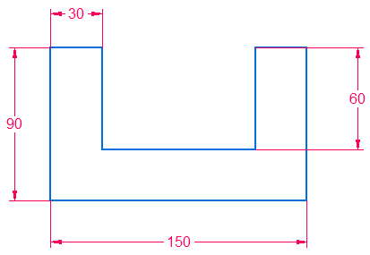
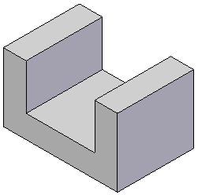
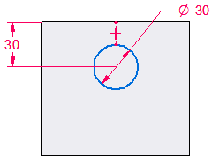
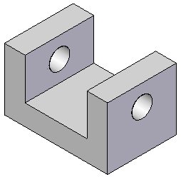

Activity: Creating ordered features
This activity guides you through the process of creating ordered features. Learn how to switch between modeling environments.
When creating a new part document, you can control the environment to begin modeling in. The File menu→Settings→Options→Helpers page provides a setting to start in the Synchronous or Ordered environment. The default setting is the Synchronous environment.
Existing files that contain only synchronous elements are opened in the synchronous environment. Existing files that contain only ordered elements or a combination of ordered and synchronous elements are opened in the ordered environment.
Start Solid Edge 2023.
Click File tab→Settings→Options→Helpers.
On the Helpers page, under Start Part and Sheet Metal documents using this environment:, click the Ordered button. Click OK.
Click the File tab.
On the File menu, click New→New.
From the Standard Templates list, choose ISO Metric, and then choose iso metric part.par.
-
Create an extrusion with the cross-section shown. Extend symmetrically at a distance of 100 mm.


-
Create a cut with the cross-section shown. Extend through all.


There are three ways to transition to the other environment.
-
Right-click the PathFinder or modeling window and choose Transition to Synchronous (or Transition to Ordered).
-
On the Tools tab→Model group, click the environment to transition to.
-
If both environments exist, in PathFinder, click the environment bar to transition to.
An environment bar is only available for selection if features exist in that environment.
-
Transition to the Synchronous environment using a method of your choice.
Notice that the ordered features do not appear. If no synchronous feature exists, ordered features are not displayed. Once a synchronous feature exists, the ordered features are displayed with a transparent color. In the synchronous environment, ordered display can be turned on or off with the shortcut menu commands Show All→Ordered Body or Hide All→Ordered Body.
Click the Ordered environment bar to transition back to the Ordered environment.
Save the file as ordered.par.
Close the file.
In this activity you learned how to create ordered features. You also learned how to switch between modeling environments.
-
Click the Close button in the upper–right corner of this activity window.